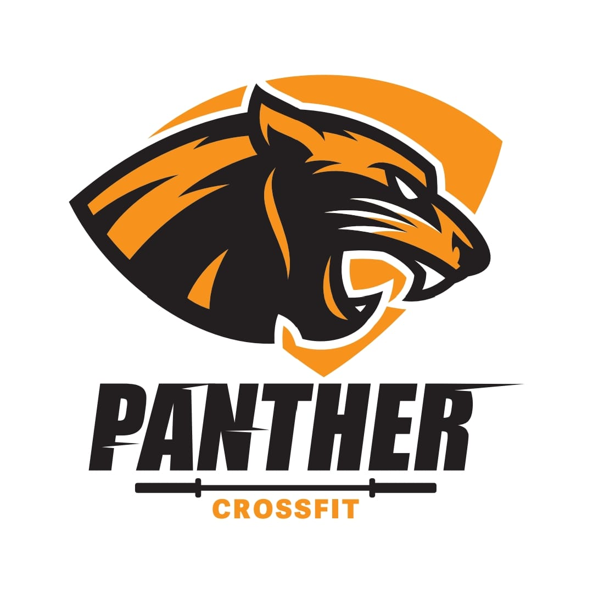
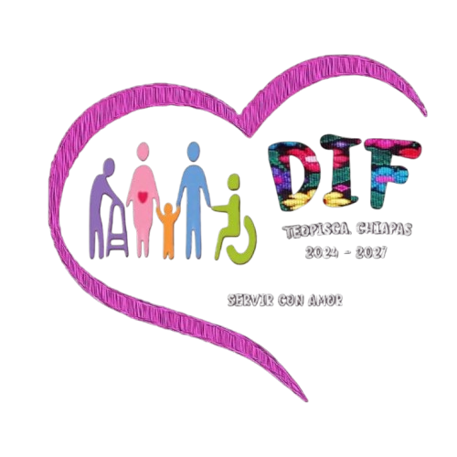

Corre de UNISA a la Unidad Deportiva
Puedes participar solo en esta ruta recreativa y familiar donde tú marcas tu propio paso, sin presiones de reloj. Al cruzar la meta obtienes tu medalla conmemorativa.


La última carrera del año.
Este 20 de diciembre cerramos el año demostrando de qué estamos hechos. Súmate al recorrido recreativo de 4.3 km desde UNISA hasta la Unidad Deportiva Municipal (puedes realizar solo la carrera de 4.3 km a tu propio ritmo, y si al llegar quieres más, cerrar en el Circuito funcional en campo).
Cuenta regresiva para la salida · 20 de diciembre, 7:00 a.m.
Segundos en vivo: 00s
🎅 ¡Lleva tu gorrito, diadema o accesorio navideño y haz de la ruta una celebración!
Tu punto de partida es el recorrido de 4.3 km desde UNISA rumbo a la Unidad Deportiva: puedes participar únicamente corriendo esta ruta y al cruzar la meta recibir tu medalla conmemorativa. Si tu energía está al tope y dominas tu cuerpo, cierra la mañana en las estaciones funcionales.
Puedes participar solo en esta ruta recreativa y familiar donde tú marcas tu propio paso, sin presiones de reloj. Al cruzar la meta obtienes tu medalla conmemorativa.
Para quienes completen los 4.3 km y quieran llevar sus límites más allá en el campo: ejercicios funcionales por distancia, midiendo tu propio esfuerzo.
Asegura tu Inscripción Oficial de $75 MXN hasta el 30 de noviembre (cupo limitado), o súmate en Participación Libre.
$75 MXN · Cupo limitado
$0 MXN · Al cerrar cupo/plazo o el día del evento
Completa el formulario para registrar tu solicitud y abrir el chat directo con el equipo organizador para coordinar tu seguimiento.